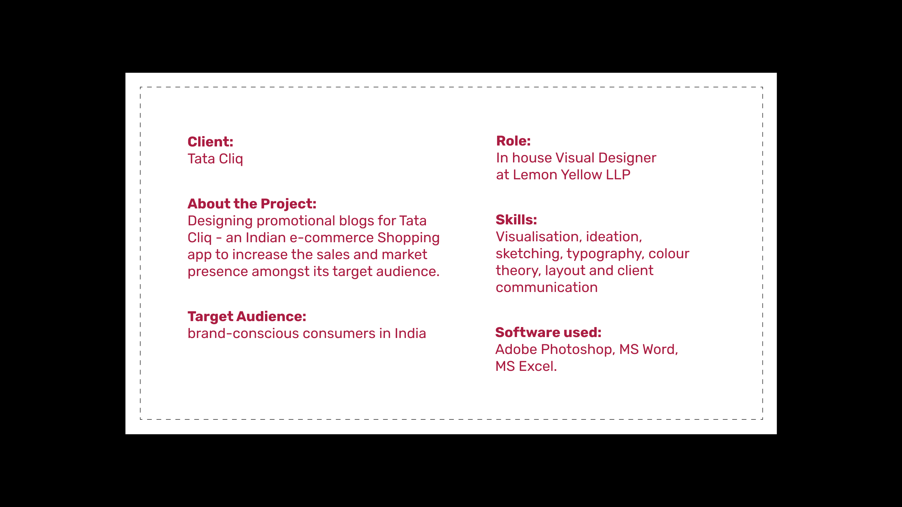
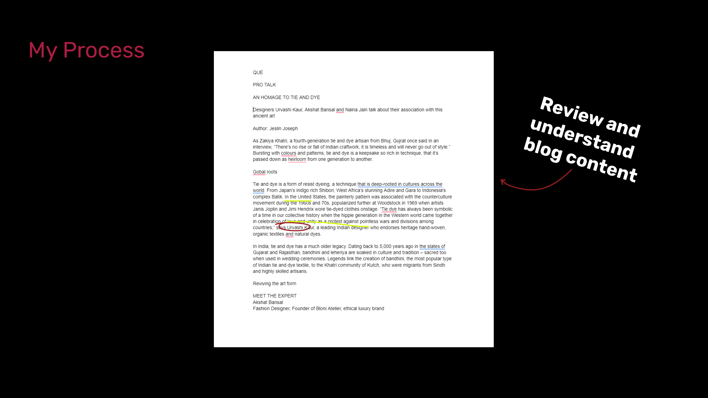
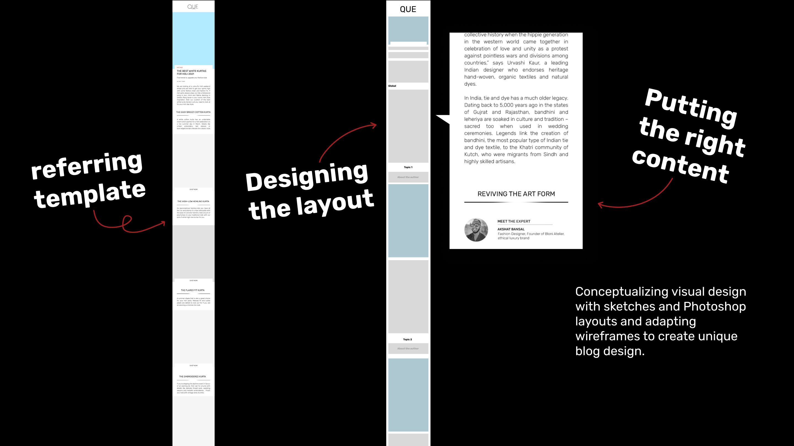
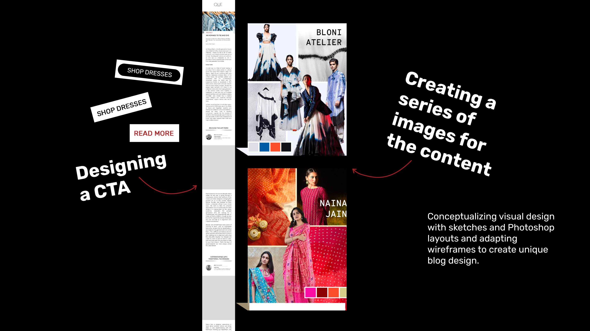
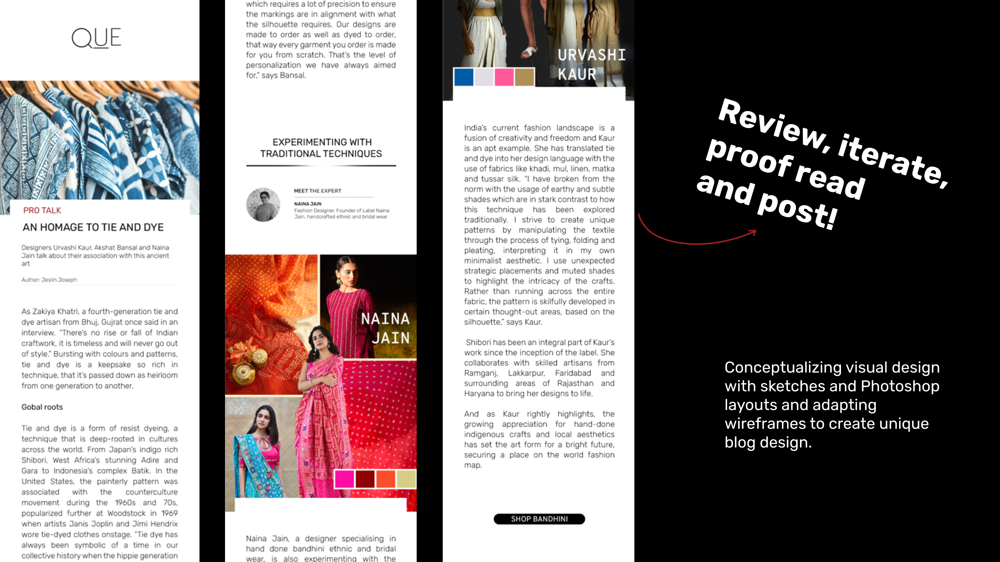
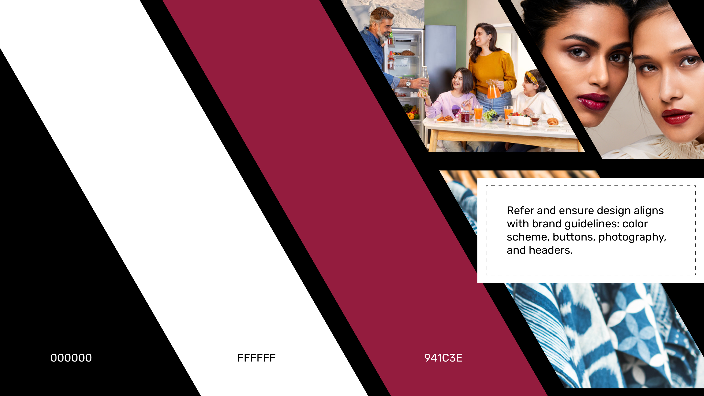
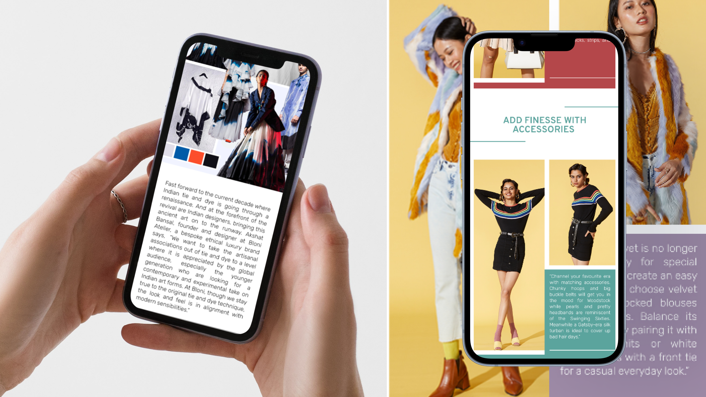
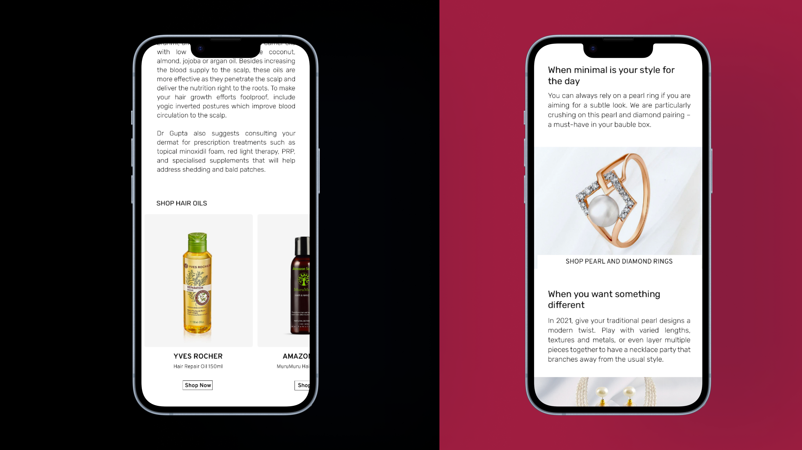
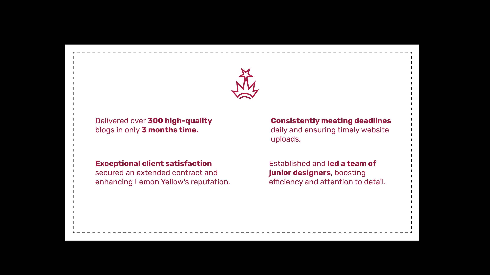

Visual design
Visual Design for Tata Cliq
A recruiter-ready adaptation of the original Behance project, preserving the key visuals and metadata in a cleaner review format.
Overview
Why this page helps recruiters
A recruiter-friendly snapshot of visual communication design work, presented through 12 visuals and built using Behance presentation modules. The Behance project currently shows 97 views and 1 appreciations.
Quick read
Highlights
- Published on Behance on September 29, 2024 and archived locally for a cleaner recruiter-facing review flow.
- Includes 12 imported visual modules so hiring teams can scan the project without leaving the site.
- Behance presents the work through polished static modules and visual mockups.
Imported gallery
Case-study visuals








